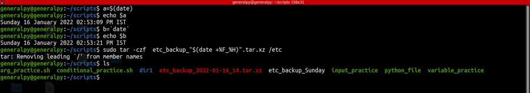

Command substitution is a very powerful feature of bash.
Command substitution allows us to substitute a command to its value instead of printing it to stdout.
There are 2 syntaxes to provide command substitution.
`command` or $(command)

We used command substitution to create backup of etc with date and hour at its end.
We can create backup scripts using above command and adding it to crontab.